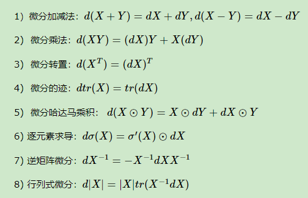
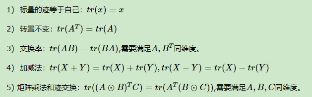

线性回归
范数
向量范数： \[ \text p范数： \left |\left | a \right |\right|_p = \left[{\sum_\limits{i = 1}^ma_i^p}\right]^\dfrac 1 p\\ 当需要进行幂运算时，则可以写成这样：\\ \left |\left | a \right |\right|_p^p = \left[{\sum_\limits{i = 1}^ma_i^p}\right]\\ \] 默认情况下\(\large \left |\left | a \right |\right|\)就代表2范数。\(\large \left |\left | a \right |\right|^2\)就代表每个元素先平方再求和。
矩阵范数： \[ \text {(Frobenius)F范数：} \left |\left | A \right |\right|_F = \left[{\sum_\limits{i = 1}^m}{\sum_\limits{j = 1}^nA_{ij}^2}\right]^\dfrac 1 2\\ \] #### 推导过程
这一步我一直没想明白怎样推导过来的，看了以下这些资料。才能够明白，感谢分享。(重点学习微分法)
| 标题 | 网址 |
|---|---|
| 机器学习中的数学理论1：三步搞定矩阵求导 | https://zhuanlan.zhihu.com/p/262751195 |
| 机器学习中的矩阵向量求导(一) 求导定义与求导布局 | https://www.cnblogs.com/pinard/p/10750718.html |
| 机器学习中的矩阵向量求导(二) 矩阵向量求导之定义法 | https://www.cnblogs.com/pinard/p/10773942.html |
| 机器学习中的矩阵向量求导(三) 矩阵向量求导之微分法 | https://www.cnblogs.com/pinard/p/10791506.html |
| 机器学习中的矩阵向量求导(四) 矩阵向量求导链式法则 | https://www.cnblogs.com/pinard/p/10825264.html |
| 向量、矩阵求导方法-神经网络反向传播的数学原理 | https://www.bilibili.com/video/BV1vV4y1p7Nn |
事实上，沐神这里写的不是很严谨。以下是手推过程。沐神把负号给去掉了，应该是令偏导等于0，有没有负号其实无所谓。再一个就是答案差一个转置，应该是由于不同布局导致的结果。即：分子布局与分母布局的结果相差一个转置。
然后是对结果求偏导，令其等于0。这里漏了一个(-1)，答案应为 \(\large \text w^* = (X^TX)^{-1}X^{-1}\text y\)
推导如下：
这里顺便把一些重要的矩阵微分的性质和迹的矩阵性质记录一下。
| 矩阵微分的性质 | 迹的矩阵性质 |
|---|---|
|  |  |